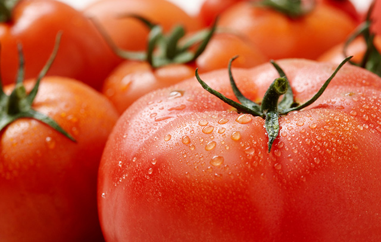

토마토를 맛있게 먹는 방법

신선한 토마토 구별 방법
수확한 토마토를 바로 먹고 싶어서 서울 외곽에 있는 토마토 농가에 직접 다녀왔습니다. 이번에 온 농가의 토마토는 신선하고 저렴하군요.
토마토를 맛있게 먹는 방법
일반적으로 토마토는 물에 씻어서 바로 먹는 것이 가장 좋습니다. 더운 날에 맛있는 토마토를 먹으면 그것만으로도 행복한데요. 수분 공급도 가능해서 일석이조랍니다.
물론 다른 것을 함께 뿌려 먹는 것도 맛있는데요. 소금, 설탕, 마요네즈, 올리브유를 추천합니다.